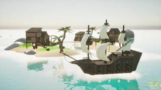
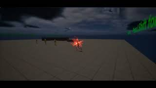

About Me
I am a game development student with a strong interest in gameplay programming, video game engines, physics and AI systems. I enjoy building interactive mechanics, spending more time on automating a task rather than doing it manually and advocating for the open source movement.
Group Projects

Leviathan's Gauntlet Collab Game
2025 · Unreal Engine
- Developed ship movement and physics systems, including realistic turning mechanics and tilt for improved player immersion.
- Designed and implemented AI behaviour for enemy ships using finite state machines.
- Enhanced gameplay pacing by introducing a sprint/boost mechanic, improving player responsiveness in critical situations.
- Optimized steering and control systems to make navigation feel natural and intuitive within a rogue-like framework.
- Collaborated closely with the team to refine game feel, balancing challenge and playability for a cohesive player experience.
Personal Projects

Stylized VFX using Niagara Systems
2025 · Unreal Engine
- Created 6 stylized VFX sets using Unreal Engine 5’s Niagara system, drawing inspiration from Flash animation and Dragon Ball Z.
- VFX: Groundstrike, Dash, Projectile, Charge-up Beam, Sprint, Power-up leading to Ultimate.
- Focused on visually impactful effects to enhance gameplay feedback and player experience.
Stylized VFX using Niagara Systems
Year 2 · Unreal Engine
- Developed player movement and input system
- Worked on enemy behaviour and level logic
Experience
Software Intern – Bleezur.ai
April 2022 – September 2022 (Germany · Remote)
- Collaborated with senior-level developers to design a software that automates the retrieval of client information using APIs from several different applications.
- Automated repetitive tasks and workflows using Python scripting, saving the team an average of 10 hours per week.
- Developed web scraping scripts using Python to gather data from various websites, resulting in a 30% increase in data collection efficiency.
- Utilized several different APIs such as those of Google, Facebook, LinkedIn, Instagram, Twitter, and Yahoo.
Graphic Design Intern – Poddar Foundation
June 2022 - August 2022, (Mumbai, India · Remote)
- Created compelling visual content for an NGO's mental health awareness campaign, such as posters and pamphlets, reaching over 50,000 individuals and contributing to a 30% increase in event participation and community engagement.
- Developed engaging social media content using Adobe Creative Suite, for the NGO's mental health awareness initiative, resulting in a significant uptick in online engagement and a 40% increase in followership within three months.
Certifications & Currently Learning
Certifications
- Complete C# Unity Game Developer 3D (Udemy • 2022)
- Introduction to Game AI and Reinforcement (Kaggle • 2022)
- Complete Blender Creator: 3D Modelling (Udemy • 2023)
Currently Learning
- AI behaviour systems
- Niagara systems in Unreal Engine 5
- Local multiplayer in Unreal Engine 5
Skills
- Languages: C++, Java, Python, C#
- Engines & Tools: Unreal Engine 5, Blender, Git
- Game Dev: AI, Gameplay Systems, Technical Design, Programming, VFX, PCG
- Other: Music, Graphics Design, Linux
Education
BSc (HONS) Games Development
Staffordshire University · 2023 – 2026
International Baccalaureate Diploma Programme
St. Andrews International School Bangkok · 2021 – 2023